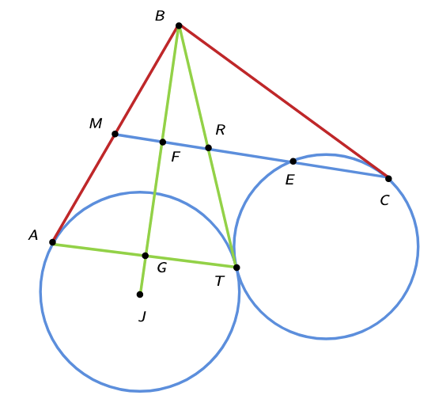

Research
With MIT PRIMES, I am currently conducting research in the realm of distributed systems. I am a member of the D.O.C.C. lab, a research group at Tufts focusing on the diagnosis, observability, and configuration of cloud systems.
Abstract
Timeouts are critical in determining whether a request has succeeded or failed. Developers face several challenges when setting timeout values in distributed systems; the specific challenge we investigate being the systems’ propensity to change, both over the short- and long-term. We propose three timeout-optimized policies targeting change over different time scales, assuming APIs that are both idempotent and atomic. We evaluate our approaches on a home-grown microservices testbed and on DeathStarBench's socialNetwork application. We will compare the median and tail latency requests when each approach is used in simulated environments with changing system performance.
Entrepreneurship

I'm a co-founder and director of IMTC, a math competition that aims to push the limits of young mathematicians. IMTC has reached over 2500 students globally, from countries inlcluding Thailand, Peru, and Kenya, and is consistently supported by five corpotate sponsors who have provide prizes worth, on average $20000 per competition.
Along with creating novel, interesting, and enjoyable problems, I secure sponsorships, maintain our website, and generally coordinate the team.
Math
Select problems from IMTC
Problem
Solution
Problem
Proposed by Govind Velamoor
Solution
Now \(f(x)=12x(r_1x^2+36r_3)\). The factor of \(x\) gives us the root \(0\), so \(r_1,r_3\) must be roots of \(r_1x^2+36r_3=0\). Note that \(r_1+r_3=0\) by Vieta's, so we can let \(r_3=-r_1\). This gets us \(r_1(x^2-36)=0\). Substituting \(x=r_1\), we find \(r_1=\pm 6\) and so \(r_3=\mp 6\).
Our answer is \(0^2+(\pm 6)^2 + (\mp 6)^2 = 72\).
Problem
Proposed by Govind Velamoor, Tanishq Pauskar
Solution
\(\textbf{Case 2:}\) \(a_n < 1\) From the first equation, we will get a positive solution greater than \(1\) and from the second we will get a positive solution less than \(1\).
\(\textbf{Case 3:}\) \(a_n = 1\) We will always get \(a_{n-1} = \frac{1}{2}\). Furthermore, it is impossible for any \(a_n\) not \(a_{11}\) to be \(1\), because that would mean that \(a_{n+1} = 0\), which is impossible. So, for any \(n\) such that \(2\leq n \leq 11\), it is true that if \(a_n>1\), then there is only one valid solution for \(a_{n-1}\) and \(a_{n-1} < 1\), and if \(0<a_n<1\), there are two solutions for \(a_{n-1}\), one satisfying \(a_{n-1}>1\) and the other satisfying \(0<a_{n-1}<1\).
We know that \(a_{12} = 0\), so \(a_{11} = 1\) and \(a_{10} = \frac{1}{2}\). Now, we can use a recursion to find the number of values of \(a_n\) that are greater and lower than \(1\). Let \(g_n\) and \(l_n\) be the number of valid solutions that are greater than \(1\) and less than \(1\) for \(a_n\) (where \(1\leq n \leq 11\)). We know that \(g_{n-1} = l_{n}\) and \(l_{n-1} = l_{n} + g_{n}\). So, \(l_{n-1} = l_{n} + l_{n+1}\). Because \(l_{11} = 0\) and \(l_{10}=1\), this is the Fibonacci sequence in reverse! The sequence for \(g\) is the same, but lags one term behind \(l\). Because \(l_{10} = 1\) and \(g_{10} = 0\), we can compute that \(l_1 = 55\) (the 10th Fibonacci number) and \(g_1 = 34\) (the 9th Fibonacci number). So, \(a_1\) has \(55+34=89\) total solutions. Recalling that \(a_0\) can be both positive and negative, we double this to find our answer: \(89\cdot 2 = \boxed{178}\).
Problem
Proposed by Govind Velamoor
Solution
Let \(\omega_3\) be the circle with radius \(0\) centered at \(B\), and let \(r\) be the radius of \(\omega_1\). Now consider the power of \(B\). Because \(B\) lies on the radical axis of \(\omega_1\), \(\omega_2\), we know that \(BJ^2 - r^2 = CB^2\). But we know that \(BJ = CJ\), so \(CJ^2 - r^2 = CB^2\). The power of \(C\) WRT \(\omega_3\) is \(CB^2\), and the power of \(C\) WRT \(\omega_1\) is \(CJ^2 - r^2\). Because we know these two quantities are equal, \(C\) lies on the radical axis of \(\omega_1\), \(\omega_3\). But since \(M\) is the midpoint of \(AB\), its power WRT \(\omega_1\) and \(\omega_3\) is also equal, implying that \(CM\) is the radical axis of \(\omega_1\) and \(\omega_3\).
Now construct \(TB\) and let it intersect \(MC\) at \(R\). Since \(TB\) is the radical axis of \(\omega_1, \omega_2\), \(R\) is the radical center of \(\omega_1, \omega_2, \omega_3\). This means that \(BR = RT\), so \(MR\) is a midsegment of \(\triangle BAT\), and \(MR = \frac{AT}{2} = 26\). Let the altitude from \(B\) to \(AT\) intersect \(MR\) at \(F\) and \(AT\) at \(G\). Because \(ABT\) is isosceles (by equal tangents \(AB\) and \(TB\)), we can compute \(BF = \frac{BG}{2} = \frac{\sqrt{AB^2 - \left(\frac{AT}{2}\right)^2}}{2} = 4\sqrt{66}. \)
Also, \(BC = 70\), so \(FC = \sqrt{BC^2-BF^2} = 62\). \(FR = \frac{MR}{2} = 13\), so \(RC = 49\). Now, power of a point on \(R\) WRT \(\omega_2\) yields \(RT^2 = RE \cdot RC\). \(RE = \frac{35^2}{49} = 25\). Finally, we have \(EC = RC - RE = \boxed{24}\). 
Some Projects!
Delaunay Triangulation
To generate meshes, animators use delaunay triangulation, a technique from Computational Geometry. The interface and backend for this project were written in Rust. All code can be found on my GitHub, here.
Desmos Music
Music generated in the Desmos graphing calculator! Find the functions used here.
Agent Smith
I developed a large-language-model-based agent that has access to my computer and can modify its own source code to give itself additional capabilities. Here, I asked it to create a simple flask website. See code here!
Pathfinder
I helped build the Tech Tigers' pathfinder system, based on Dijkstra's algorithm. In this video, you can see our robot hit a truss, realize it's off course, and generate a new trajectory to the bottom of the field.
Origami, just for fun!
Quick facts
Two truths and a lie
1. I can name every single country on a world map
2. I can type as fast as I speak
3. All of my fingers are double jointed
Select Awards
ILO Gold Scholar (with perfect score)FTC World Championships Ochoa Division Design Award
2x AIME Qualifer